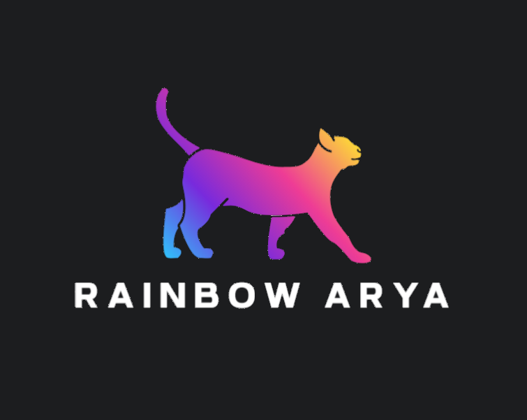

Gestión de Historia Clínica
Busque o cree el registro de un paciente y acceda a su historial completo.
Historial Completo
Utilice el panel izquierdo para buscar y seleccionar una mascota. Su historial clínico aparecerá aquí.

Busque o cree el registro de un paciente y acceda a su historial completo.
Utilice el panel izquierdo para buscar y seleccionar una mascota. Su historial clínico aparecerá aquí.